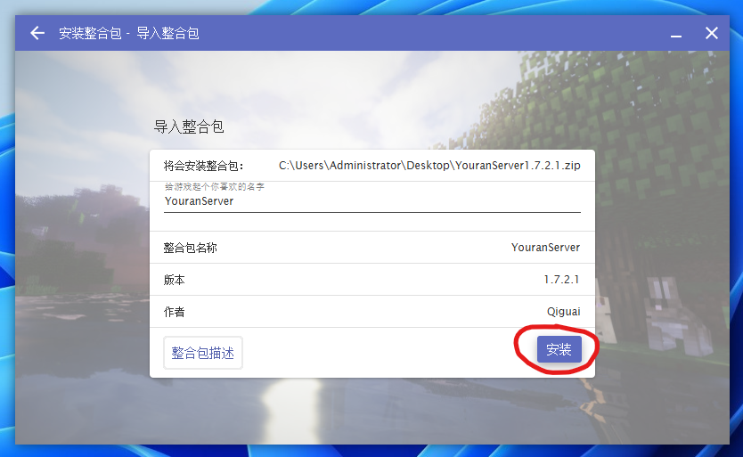
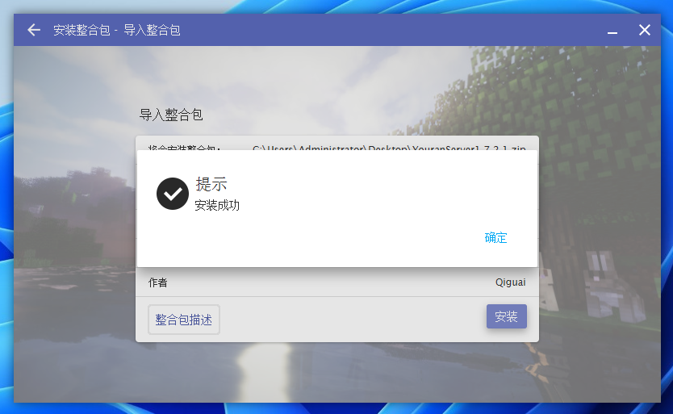
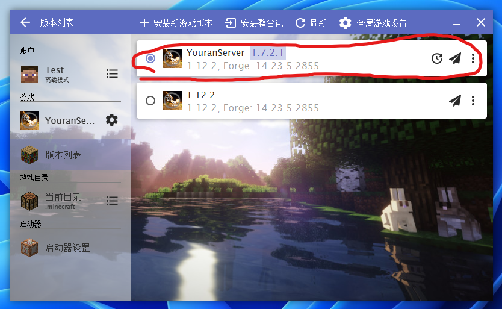
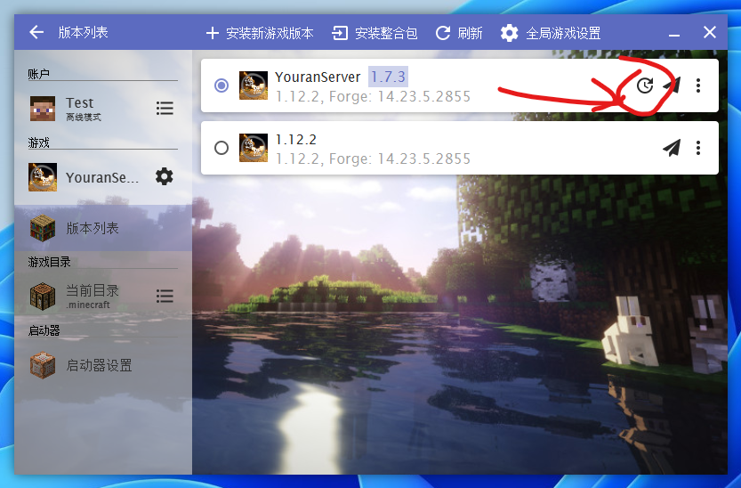

欢迎游玩悠然服务器
介绍
欢迎来到悠然服务器！我们是一个拥有数十个模组以及一些插件的Minecraft Java1.12.2 SpongeForge公益服。我们服务器最开始并没有装任何的mod，纯粹是一个原版生存服务器。后来才开始装起模组，最后才装了个SpongeForge，然后由于原本的服务器撑不住了只好换了个服务器。
如果你要加入我们服务器，请详细这里或网页手册的教程。
我们服务器有如下特色：
| 一、种田、冒险、科技和聊天 |
| 二、对于模组有少许魔改，不影响模组本身玩法 |
| 三、服务器每天都有备份，所以不用担心自己的东西会因为什么问题没掉！ |
| 四、客户端采用HMCL制作的服务器自动更新整合包 |
| 五、拥有登录密码，保护你的游戏账户 |
| 六、没有正版验证！（但有白名单） |
| 七、完全免费！公益服哦！ |
为什么这个服务器叫做“悠然服务器”呢？
这个“悠然”一名取自东晋陶渊明所作的《饮酒》一诗中的”悠然见南山“，意指我们服务器平日生活很悠闲。
实际上是因为服主不太会取名字，一看这个“悠然见南山”的“悠然”挺不错，就拿来用了。
下载
如果你想要游玩我们的服务器，请点击此处下载服务器整合包
你也可以采用其他下载方式：
①微云网盘下载
②加入服务器QQ群下载
③百度网盘下载（不推荐）（提取码：yran）
你也可以点击此处浏览全部整合包版本（这有啥用）
安装
注意：我们服务器的整合包比较特殊，是专门使用HMCL启动器制作的服务器自动更新整合包，必须要使用HMCL启动器安装（所以如果你正在使用其他启动器，将会比较麻烦）。
①
打开你的HMCL（Hello Minecraft! Launcher）启动器。如果你在使用网易我的世界启动器或其他启动器（如Plain Craft Launcher 2），请前往HMCL官网下载，或点击此处查看Minecraft Java游玩教程。
②
点击左侧的版本列表，在“版本列表”界面的上面一栏中找到“安装整合包”

③
在安装整合包界面，你可以将已经下载的整合包文件导入到启动器中（直接拖入最简单了），也可以采用从互联网下载整合包的方式，填入“https://c13class-1305965891.cos-website.ap-shanghai.myqcloud.com/youran/server-manifest.json”也可以安装。

④
在弹出的界面中，确认整合包信息，然后点击安装即可

当弹出“安装成功”时，整合包就安装成功了！

进入服务器
获取白名单
加入服务器QQ群：953168624，申请白名单！
服务器地址
我们服务器的地址是：server.youranserver.top，欢迎游玩！。另外，点击这里可以前往服务器网页手册。（注；服务器网页手册基于Github，访问速度较慢）
更新
我们服务器会常常不定期更新整合包。
虽然我们这个整合包是服务器自动更新版，启动时会自动检查是否有更新并自动下载，但如果你发现无法自动更新，你就需要参照下面的教程手动更新。
①
点击左侧的版本列表，在弹出的界面中找到已经安装的整合包

②
点击整合包右侧的时钟状更新按钮，在弹出的界面中将新版整合包文件拖入

③
点击安装即可